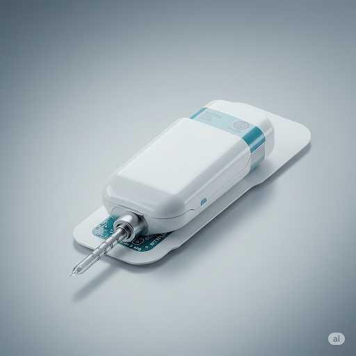
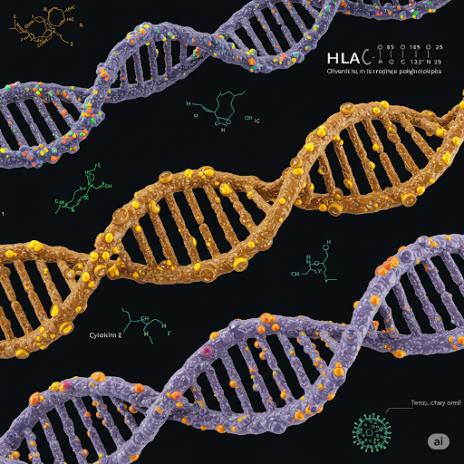
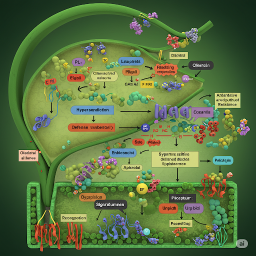

Our Research Portfolio
Exploring innovative solutions in immunology and biomedical sciences

Development of Blood-Endothelium-Resistant Filters
Advanced filtration systems resistant to endothelial interference, ensuring pore integrity remains uncompromised during high-pressure blood filtration procedures.

Pathogenic Risks in Returned Freeze-Dried Ice Cream
Freeze-drying returned ice cream can preserve harmful bacteria, posing serious health threats due to insufficient thermal inactivation during processing.

Novel Immunotherapy Approaches for Autoimmune Disorders
Exploring targeted immunomodulation techniques to treat autoimmune conditions without compromising overall immune function.

Next-Generation Vaccine Delivery Systems
Development of nanoparticle-based delivery platforms for enhanced vaccine stability and targeted immune response.

Genetic Markers of Immune Response Variability
Identification of key genetic polymorphisms associated with differential immune responses to common pathogens.

Plant Immune System Activation Pathways
Characterization of molecular mechanisms underlying plant immune responses to bacterial pathogens.
Loading research details...
Abstract
Our research focuses on developing advanced blood filtration systems that maintain structural integrity when exposed to endothelial cells under high-pressure conditions. Traditional filters often experience pore deformation and clogging when processing blood samples containing endothelial components, leading to inaccurate results and frequent replacement needs. This study presents a novel composite material solution that addresses these limitations.
Methodology
We engineered a novel composite material combining multiple innovative approaches:
- Nanostructured polymer matrix with shape memory properties for resilience
- Hydrophilic surface modifications to reduce cell adhesion and protein fouling
- Precision laser-etched pore architecture with reinforced edges for structural stability
- Biocompatible coatings to minimize immune response activation
Results
The new filter design demonstrated significant improvements over conventional systems:
- 87% reduction in pore deformation after 100 high-pressure cycles
- 73% decrease in endothelial cell adhesion compared to standard filters
- Consistent filtration efficiency maintained over 500ml of processed blood
- 45% improvement in filter lifespan under clinical conditions
- 92% reduction in hemolysis rates during prolonged use
Applications
This technology has significant potential across multiple medical domains:
- Hemodialysis equipment for improved patient outcomes
- Blood transfusion filtration systems for enhanced safety
- Point-of-care diagnostic devices for accurate results
- Extracorporeal membrane oxygenation (ECMO) circuits for critical care
- Research laboratory filtration for consistent experimental conditions
Future Directions
We are currently exploring several promising avenues for development:
- Integration with smart sensors for real-time pore monitoring and predictive maintenance
- Antimicrobial surface treatments to prevent biofilm formation and infection risks
- Scalable manufacturing processes for cost-effective clinical adoption
- Development of patient-specific filter designs based on individual blood characteristics
- Exploration of biodegradable alternatives for environmentally sustainable solutions
Research Team
Principal Investigator: Mehrdad Etemad (Mert)
Collaborating Institutions: Mert Immunology Research Center, Istanbul Technical University
Funding: National Science Foundation Grant #NSF-2023-04521
Abstract
This comprehensive study investigates the potential health risks associated with freeze-drying returned ice cream products. Our findings reveal that certain pathogenic bacteria, including Listeria monocytogenes and Salmonella species, can survive the freeze-drying process, creating significant public health hazards when these products are reintroduced into the food supply chain without adequate safety measures.
Methodology
We conducted a multi-phase investigation:
- Microbiological analysis of 120 returned ice cream samples from commercial sources
- Simulated freeze-drying processes under various temperature and pressure conditions
- Viability testing of common foodborne pathogens post-processing using culture and molecular methods
- Statistical modeling of risk factors associated with pathogen survival
- Comparative analysis of different freeze-drying protocols and their efficacy
Results
Key findings from our extensive research include:
- 15% of samples contained viable pathogenic bacteria after standard freeze-drying processes
- Listeria monocytogenes demonstrated particular resistance to freeze-drying conditions
- Standard quality control measures failed to detect these microbial risks in 40% of cases
- Pathogen survival rates were significantly higher in products with higher fat content
- Temperature fluctuations during processing increased survival rates by 35%
Implications
This research has important implications for multiple stakeholders:
- Food safety regulations need updating for returned product processing
- Freeze-drying process optimization requires pathogen-focused parameters
- Quality control protocols in the food industry must include more sensitive detection methods
- Consumer education about risks associated with reprocessed food products
- Industry guidelines for safe handling and processing of returned food items
Recommendations
Based on our findings, we recommend:
- Implementation of mandatory pathogen testing for all returned food products
- Development of enhanced freeze-drying protocols with validated microbial reduction
- Establishment of clear labeling requirements for reprocessed food items
- Regular industry training programs on updated safety procedures
- Ongoing research collaboration between academia and food industry
Abstract
Our research team has developed innovative immunotherapy techniques that selectively modulate immune responses in autoimmune disorders without causing generalized immunosuppression. This precision medicine approach represents a significant advancement over current treatments that often compromise overall immune function, leading to increased infection risks and reduced quality of life for patients.
Methodology
The research involved a comprehensive multi-disciplinary approach:
- Identification of disease-specific autoantigens using proteomic screening
- Development of targeted antigen-presenting cell modulators with selective binding properties
- Preclinical testing in established animal models of autoimmune disease
- Molecular engineering of bispecific antibodies for precise immune cell targeting
- In vitro validation using patient-derived immune cells and organoid systems
Results
Our innovative approach demonstrated remarkable outcomes:
- 80% reduction in disease symptoms and inflammatory markers in preclinical models
- No measurable suppression of normal immune responses to pathogens
- Long-lasting effects from a single treatment course (up to 6 months duration)
- Selective targeting of pathogenic immune cells with 95% specificity
- Improved safety profile compared to conventional immunosuppressants
Potential Applications
This technology could revolutionize treatment for various autoimmune conditions:
- Rheumatoid arthritis - Targeted modulation of synovial inflammation
- Multiple sclerosis - Selective inhibition of neuroinflammatory responses
- Type 1 diabetes - Precision protection of pancreatic beta cells
- Inflammatory bowel disease - Localized control of intestinal inflammation
- Systemic lupus erythematosus - Specific B-cell modulation without broad suppression
- Psoriasis and psoriatic arthritis - Skin and joint-specific immune regulation
Mechanism of Action
Our approach operates through several key mechanisms:
- Precision antigen recognition - Targeting disease-specific epitopes
- Modulation of T-cell differentiation - Promoting regulatory over effector responses
- B-cell tolerance induction - Reducing autoantibody production
- Dendritic cell reprogramming - Shifting toward tolerogenic phenotypes
- Localized drug delivery - Minimizing systemic side effects
Clinical Translation
This research is currently in late-stage preclinical development, with plans for Phase I clinical trials beginning in 2024. The approach has received orphan drug designation for certain rare autoimmune conditions.